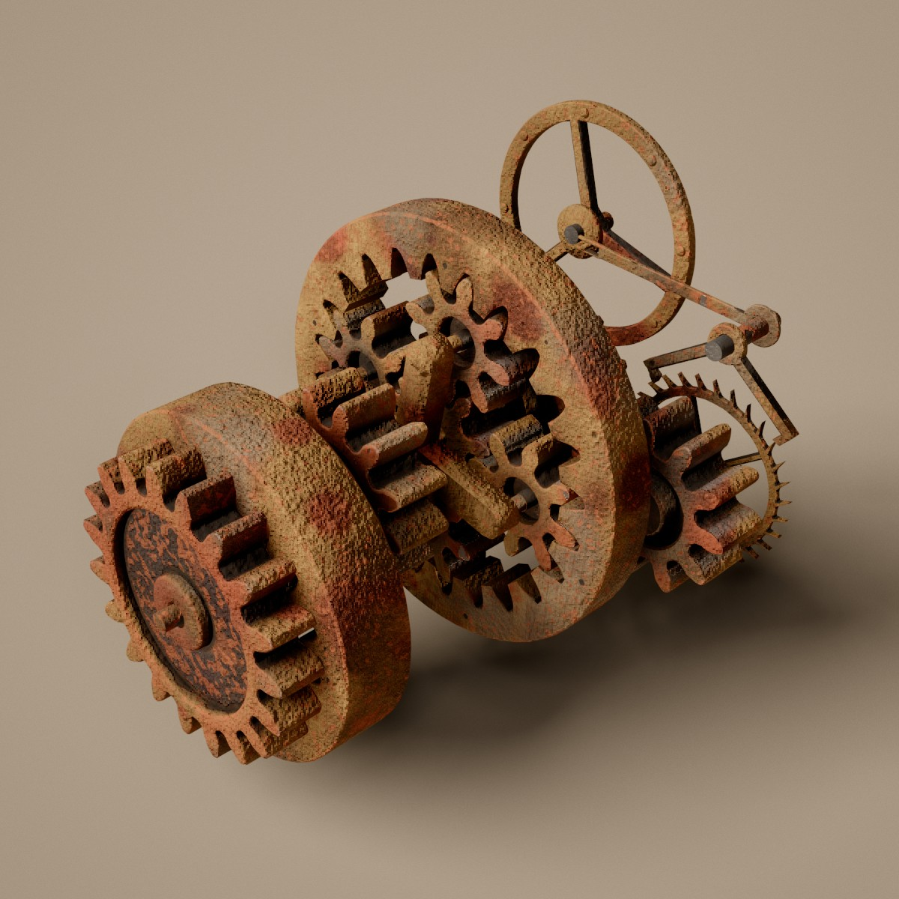

How Rust ticks
A clockwork gear train floats in a studio, ticking on its escapement while it rusts from bare steel to flaking crust. Here is how the escapement keeps time, how one angle drives every gear, how a train is grown so that nothing collides, and how the rust is painted on.

Clockwork that really works
Day 11's prompt was Rust. The piece is an old mechanism left to weather: a train of gears hanging in the air, run by a clock escapement, its steel going from oiled and bright to a crust that lifts and flakes. Every gear is a real involute gear that meshes with its neighbours, and every part moves because the escape wheel moves. Nothing is animated on its own.
A machine comes from its Variation and a target number of gears. A generator grows the train stage by stage from the escape wheel's arbor: spur, compound and idler stages, bevels, worms, rings, planetary sets, a Scotch yoke with a rack, helical and herringbone pairs, crossed helicals, roller chains and a bevel differential. Each new stage has to clear everything already there. The escapement is a Graham deadbeat anchor with a pendulum, or a lever that drives a balance wheel through its impulse pin.
Then the finish. The parts are chamfered and worn as meshes, and their material, a surface() hook on the shared pipeline, paints rust that grows over the machine while it is on show. Drag a gear and the train turns by hand: the anchor lifts clear and drops back in when you let go.
Lock, impulse, drop
An escapement lets a wound train go one tooth at a time. The escape wheel's teeth press on the anchor's two pallets. While a tooth rests on a pallet's locking face, the wheel can't move. The pendulum swings the anchor until the tooth slips off the corner onto the impulse face, and the tooth pushes the pallet aside as it slides across: that push is what keeps the pendulum going. Past the far corner the wheel is free and drops until a tooth lands on the other pallet. Each beat advances the wheel half a tooth.
The layout is solved from the tooth count N and tip radius R. The pallets span n + ½ pitches, with n = round(N / 4 − ½), so that the lines from the anchor's pivot to the middle of both working ranges are tangent to the tip circle. That puts the pivot at D = R / cos β above the wheel's centre, β being half the span. The locking faces are arcs about the pivot. That is what makes it a deadbeat: while a tooth rests on one, the anchor turns but the wheel never recoils. The impulse faces are straight cuts placed so that the tip slides across them while the anchor turns through the 2° lift and the wheel through 0.38 of a pitch. The rest of the half pitch is drop. Every contact keeps a gap of 0.002 R, so the solids touch to the eye and never in numbers.
Time drives it the other way round. The anchor angle is a cosine, ±3.5° over the pendulum's period (2 s by default, the Pendulum slider). For each beat, motion() finds where the tooth tip touches the impulse face at that anchor angle, solved exactly. It finds the release angle where the tip passes the far corner by bisection, then eases the drop in over 5% of a beat. A tick sounds when the tooth lands.
A Graham anchor, at its own proportions
The day's own layout and motion code, run in 2D: lift 2°, lock 0.75°, amplitude 3.5°, impulse 0.38 pitch. The anchor turns only a few degrees, so the pallets view zooms in on them. The wheel's teeth lean forward 14° so that only the tips touch a pallet; spokes and hub are the wheel's own outline.
A lever and a wide swing
Some machines run on a balance wheel instead, as a watch does (the Balance wheel slider is the chance of one). The anchor stays the same Graham anchor and keeps the same timing, but its pendulum is replaced by a lever that runs out sideways from the pivot. The lever ends in a fork, and the fork's slot holds the impulse pin standing up from the balance's roller. As the anchor rocks a few degrees, the pin is carried sideways and the balance swings through a wide arc.
The geometry is solved for that arc. The pin sits r from the balance staff, and the fork's tip and the pin must share their sideways position: L sin a = −r sin b. The lever length L and the pin radius r are chosen so that the anchor's swing, with a small margin, would turn the balance 55°. At the anchor's true 3.5°, the balance swings about ±38°. The pin rides up and down the slot as it goes, so the slot is deep enough for that travel. The balance carries three spokes, eight timing screws on its rim and the roller, and it sits beside the escape wheel, its staff a little more than 1.1 R + Rb from the wheel's arbor.
The fork carries the pin
The day's proportions with the escape wheel's radius as the unit: balance radius 1.3, lever and pin offset solved as in train.js, b = −asin(L sin a / r). The balance has no dynamics of its own; its angle is a function of the anchor's, so it stays in step with the escapement's tick.
Everything follows q
A gear train has one degree of freedom, so the machine has one number, q: the escape wheel's angle. Each part has a pose function pose(q, anchorAngle) that returns its world matrix. A part on a fixed axle turns by θ = ratio · q + phase about its own axis. When a stage meshes a new gear B with a gear A, the pairing gives B's frame, a ratio and a phase, and B's angle is mapped from A's: θB = r · θA + φ. Compound gears share their shaft's θ. So every shaft's ratio is the product of the pairings back to the escape wheel, and the phases keep each tooth facing a space.
Only a few parts aren't linear in q. The anchor and pendulum (or lever and balance) take the anchor angle. A Scotch yoke slides by e cos(θ − ψ), and the rack on it turns its pinion back and forth. The generator then keeps a bound on that pinion's speed rather than a ratio. Chain links are posed along their loop from the chain's travel.
spur, helical: d = m (NA + NB) / 2 r = −NA / NB φ = wrap(dir + π + pB (dir / pA − ½), pB)
ring, pinion inside: d = m (NR − NP) / 2 r = NR / NP worm: r = −starts / N bevel: r = σ NA / NB
rack: s = rpitch θ + φ planetary, ring fixed: carrier = θsun · NS / (NS + NR)
// p = 2π / N is a tooth pitch; wrap(a, p) = a − p · round(a / p)
Rust in the works
The escapement says where q may go, but a rusty train doesn't simply follow. stepMotion ties the train to the escapement with a stiff spring (k = 900, damping 60, about critically damped) and puts static and sliding friction against it, in fixed steps of 1/240 s so a slow frame doesn't make it ring. A stuck train holds until the pull beats a threshold drawn for each stick, rust · (0.006 + 0.02 · random). Then it lurches, judders against a sliding friction of rust · 0.004, and sticks again once it has nearly stopped close to the target. It is never allowed past the escapement: a tooth can't go through a pallet. The rust here is the rust actually grown, Rust times Age, so a new machine runs clean. A creak of cogs plays as it breaks free, louder the harder it held, and a clack plays as it sticks.
By hand
Pressing on a gear casts a ray, and the gear's axle gives a plane through the hit point. The pointer's angle about the axle in that plane moves the drive by Δangle / ratio, so the dragged gear follows the hand and the rest of the train turns with it. While it is held, the escapement's clock stops and the anchor and its pendulum (or lever and balance) slide 6 cm along their arbors, clear of the wheel. On release the escapement takes the train back at the nearest whole tooth, and the anchor drops back in. A ratchet clicks for every tooth that passes under the hand.
A small train on one coordinate
Drag any gear to turn the train by hand. Five shafts, ratios multiplied along the chain; gears in front are drawn lighter. Each pair is placed and phased with the day's spur pairing, and the teeth are true involutes at 20° pressure angle. The trace is the lag of the train behind the escapement, using stepMotion's constants. Rust 0 follows exactly.
Involutes, cut as a rack would cut them
Every gear is generated from its tooth count and module, the pitch diameter per tooth. External teeth are involutes at a 20° pressure angle, with an addendum of one module and a dedendum of 1.25. Below the involute, the flank follows the trochoid a rack cutter would leave, so small pinions get their real undercut, and pointed tips are cut back to a land of 0.12 module. Each flank is thinned by 0.03 module of backlash, so meshed teeth never touch even after the rust heaves them a little. The profile is computed as a half-angle w(ρ) per radius, so the outline, the triangles of the teeth and the wear can all be laid out in polar rows.
Behind the teeth is a body: a solid disc, or a web sunk between rim and hub, spokes, or a ring of holes, picked from a seed where there is room. Pairing functions return where the second gear goes and how its angle follows, and they check that the modules match.
A stage at a time, if it clears
The escapement comes first: an escape wheel of 15 to 30 teeth, its anchor, and a pendulum 0.36 to 0.48 long (or the lever and balance). A pinion of 8 to 12 teeth on the escape arbor drives the first wheel. Then the train grows from its last gear. Each round picks a stage type from the machine's palette of two to four types, weighted by the Mix sliders and by how often each type has been used. The stage's canAttach says whether it can grow from that gear, and its build proposes new parts, shafts and colliders. A slider at 1 forces its type into every machine the gear count leaves room for.
A proposal is kept only if every new collider clears every old one by 0.35 module, except where they are meant to touch: meshing partners, parts on the same shaft. Colliders are convex hulls: coaxial discs for gears and axles, boxes for the pendulum's swept slab, the yoke and the rack. The test is GJK, which walks the Minkowski difference toward the origin and stops as soon as the gap is proven or ruled out. The whole machine must also fit a sphere of radius 0.65 · ∛(G / 12) for G gears, so bigger trains get more room while the parts keep their size.
Speeds are steered as it grows. A shaft must turn between 0.01 and 40 times the escape wheel. A slow driver usually gets a step-up, a big wheel on a small pinion, and a fast one a step-down. When the last gear can't take any stage, the train branches from another gear. A machine whose gear count misses the target by more than ⌈G / 6⌉ is thrown away and tried again with the next attempt's stream, up to 60 times. Late attempts may fall back on plain spur stages.
Chamfers, eaten edges and pits, in the mesh
The rust's colour is in the shader, but some of its damage is real geometry. Every part is a 2D outline swept along its axis: a gear's toothed loop, an anchor, a lever. Each end of the sweep gets a cap profile, rows of the outline inset toward the solid at increasing depth. Chamfer gives a flat 45° band, 0.24 module wide at full Chamfer. Wear gives a rounded band of uneven width, the convex corners rounded off with tooth tips first, chips at some sharp corners, and shallow pits stitched into the flat faces. A pit is a small crater mesh, 0.5 to 4 module across, sewn into a hole cut in the face, so the rest of the mesh keeps its triangles and stays closed.
Every effect only removes material, so worn teeth still clear. Insets are held to 40% of the local thickness, measured by a ray across the outline, so narrow tips keep their shape. The escapement's pallets and tooth tips do the work, so they wear only a little and never chip. Chamfer and Wear reshape the parts but not the layout: changing them rebuilds the meshes in place while the train keeps running.
Each mesh also gets three vertex attributes for the rust. A normal is averaged over vertices welded by position, so it is smooth across creases. A concavity value comes from how far the neighbours rise above the vertex's tangent plane, and a convexity value from how far they fall below it.
Grown, not noise
Rust doesn't come on as a blur. It starts at many small points, spreads in ragged fronts and leaves islands of bare steel. So the main patterns are grown offline into a tiling 64³ texture, corrosion.bin. Its red channel is the time at which rust reaches each cell, spreading from 260 small seeds through random costs per cell, a first-passage growth whose fronts come out ragged. Green is the same from 18 big patches, some starting late. Blue is the distance to spots of power-law sizes, for pits. Alpha is the distance to Voronoi edges, for scale cracking into plates. The arrival times are ranked, so a threshold of 0.4 covers exactly 40%.
The shader reads that field at three scales in the part's own space, so the pattern turns with the part. It hides the repeats with iq's no-tile trick: a slow noise picks one of eight offsets per area and blends the two nearest. For the mature crust and the oldest scale it reads two CC0 rust scans (ambientCG Rust007 and Rust004), triplanar in the part's space, also without tiles. Their brightness gives the pattern and the palette gives the colour.
The rust also arrives sooner in tooth roots and on faces that were up while the machine stood still, and later on flanks that run. A point rusts once Age · 1.2 − 0.08 passes its arrival time. Steel ahead of a front is already stained brown, the edge of a patch has a young bright margin with a raised lip, the crust behind it matures, and the oldest, dampest parts go to dark scale. Past Age 0.7 the last bare islands close over.
A gear face, ageing
A simplified version of the shader on a flat face, in 2D: grown fields from the same first-passage growth, the arrival rule, stain, margins, crust, pits, edge pits along the chamfer and tooth tips, flaking plates, grease and grime in the web's corners, a dark sunk web and brighter proud faces. Value noise stands in for the scans. The chart is setLook: everything else follows the rust with a delay.
Every machine has a story
The seed also says how the machine has lived, from still in use, oiled and polished where it runs, to abandoned for decades. In half the machines 10 to 30% of the gears are brass, which doesn't rust in patches but tarnishes all over and grows verdigris in its crevices. Six in ten machines use the mixed palette, patches of ochre, red-orange, grey-teal and dark brown over the base, and the rest take one of the seven palettes at random. A quarter of the parts take a second palette, as another batch of steel would, and each part's age strays a little from the machine's.
Age is the timelapse. With auto change on, each machine starts as bare steel and ages to the panel's settings over its time on show, eased, finishing two seconds before the next change (20 s by default). T plays the same over 14 s. Age scales every weathering setting, but they don't all come at once. The rust leads, grease comes in over the first half, grime from Age 0.15, edge pits from 0.3, and flaking from 0.45: a crust has to form before it can flake.
Finding its best side
A gear train seen edge-on is a pile of lines, and seen dead face-on it is flat. So for each new machine, bestView scores 144 directions, 24 azimuths by 6 elevations from 14° below to 52° above. For each, it splats a subsample of every part's vertices into a 64 × 64 orthographic depth buffer and counts how many cells each part owns. A part counts by the square root of its share against the most any direction shows of it, so a view that shows every part a little beats one that shows a few parts fully.
That visibility tempers the main term: the gears' discs. Each gear's disc counts by its area times c0.8 (1 − c²)0.25, c being the cosine between the view and its axle. That peaks about 38° off the axle, a three-quarter view where the face reads large and the teeth and thickness show too. A small bonus goes to views from above, as one looks at a machine on a bench.
The camera doesn't move to that direction; the machine does. The camera holds the best view's elevation, turned about 69° round from the studio's key light so the light rakes across the parts. The machine turns slowly on its spot, at 0.08 rad/s, timed so its best side faces the camera halfway through its show. Each frame, fitDistance finds how far back the camera must be for every vertex to fit, and the camera eases toward it, with the pendulum's points included at both ends of its swing. A slow roll of ±4° over 23 s keeps it from looking like a turntable. Orbiting by hand frees the camera.
Scoring directions, from above
The same score in one dimension fewer: gears seen from above are bars, the depth buffer is a row of 64 cells, and the 48 candidates are azimuths only. Point at the ring to see what a direction sees.
Taken apart and put back
A machine is never swapped in place. On a change, the old one keeps its own look and studio until it is gone. A lever throws, and each part slides off its axle along the axle's direction, then drifts away along a random direction and tumbles, the drift growing with the square of time. Parts start in a staggered order, each over three quarters of the 1.3 s, and dissolve as they go, a screen-door threshold in every pass, so their shadows and depth fade with them. Each one leaves with a clank pitched by its size, some dragging a chain rattle.
Then the next machine is generated and arrives along the same paths in reverse over 1.8 s. Its parts settle onto their axles in a staggered order with a clink, the big ones with a clank, and the last one with a latch. Once everything has landed, the auto change count starts over.
A new studio cross-fades over 1.2 s: the spherical harmonics, the key light's direction and colour, and the background ease together, and the reflections swap halfway. Seven studios are each baked once, on first use. The backdrop is a seamless bowl, lowered to a few centimetres under the machine's lowest point so the soft shadow reads. Pausing averages frames into a still, and anything that moves a part restarts it.
Tic, tac and creak
Thirty-four one-shots in ten sets, cut from CC0 recordings on freesound.org. The escapement plays a tick each time a tooth lands, tic and tac a little apart in pitch. The gear whose teeth pass fastest, short of a blur, clicks softly once per tooth. An old machine now and then creaks as it settles, and rust breaking free creaks louder the harder it held. A hand on a gear latches on and ratchets once per tooth. Taking machines apart and putting them together plays levers, clanks, chains, clinks and a latch, each timed to its part and panned to where it is.
The rustier the machine, the duller the sound: once there is some rust, a lowpass closes from about 11 kHz toward 3 kHz as it grows. Each play picks a variant (never the same one twice in a row), with its pitch and pan varied by the unseeded random, so the sound never shifts the seeded machine. Twenty-four voices play at most, through a gentle compressor.
Where the time goes
Controls
- Drag a gear to turn the train by hand; drag elsewhere to orbit, scroll or pinch to zoom.
- Machine: Variation, Gears (6 to 30), Balance wheel (the chance of a lever and balance instead of a pendulum).
- Mix: a weight per stage type, from spur to differential; 0 leaves a type out, 1 puts it in every machine.
- Finish: Chamfer, Wear, Age, Rust, Rust colour, Grease, Edge pitting, Flaking, Grime, and Pendulum (the period, for the balance too).
- Studio, Auto change and Change every (20 s by default; the machine ages over that time).
- R makes a new machine, T plays the ageing timelapse, M or the speaker button toggles sound.
- Space pauses, F goes fullscreen, Tab hides the panel, P saves a screenshot.